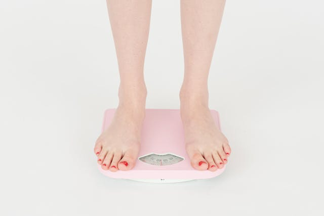

A obesidade é uma doença complexa. Como já dissemos, muitos fatores podem fazer você ganhar peso ou recuperar o peso perdido. Tudo depende da maneira como o seu corpo reage à redução de peso.
Mas não perca a esperança e não pense que você precisa fazer isso sozinho(a). Estabeleça uma parceria com o seu médico de confiança para manter o controle da obesidade e obter todos os benefícios de saúde que acompanham a perda de peso. Inicie uma jornada de controle que seja moldada a partir dos seus objetivos, necessidades e estilo de vida.
Para perder e controlar seu peso de forma saudável, tratamentos que prometem resultados mágicos, muitas vezes, não são a resposta. Dieta equilibrada e uma rotina de exercícios, sem dúvida, fazem parte da solução. Para ter sucesso, é fundamental entender que o tratamento deve ser individualizado, pois cada corpo é único, cada pessoa tem a sua rotina e estilo de vida. Por isso, procure apoio médico para que sua jornada seja planejada de forma personalizada.